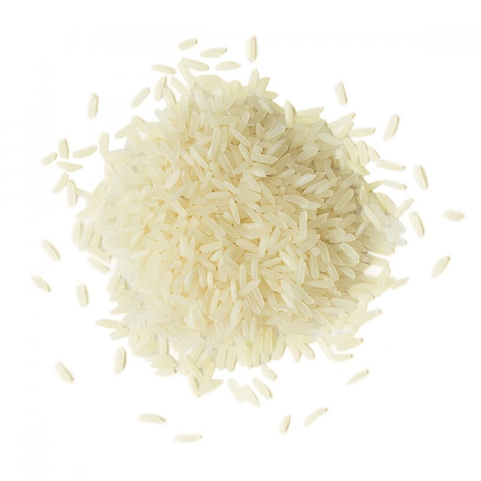

About this item
- Jasmine rice is a great base for stir-fries or as a side dish for grilled, fried, or slow-cooked food like roasts and stews.
- Jasmine rice is a lovely, subtly perfumed rice used across South East Asia. It’s strongly associated with Thai food, and used for serving with everything from Thai marinated chicken to Chilli Basil Stir Fry, Satay Skewers and the many Thai curries out there.
- It’s also used to make Thai fried rice and Pineapple Fried Rice